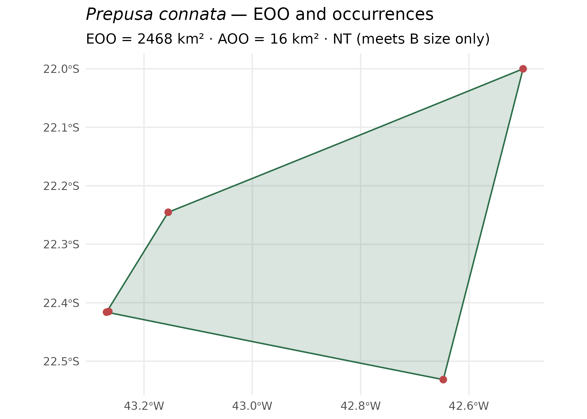

mappingAS ships with a small occurrence table
(example_occurrences.csv) for three Brazilian mountain
endemics. Here we screen one of them — Prepusa connata Gardner
(Gentianaceae), from the Serra dos Órgãos / Serra da Mantiqueira region
— against Criterion B of the IUCN Red List.
The range metrics below run offline, from the points alone. The habitat, fire, protected-area and report steps are shown as code because they read MapBiomas / WDPA data over the network.
1. Read the occurrences
library(mappingAS)
library(sf)
occ <- read_occurrences(
system.file("extdata", "example_occurrences.csv", package = "mappingAS")
)
# keep just Prepusa connata
pc <- occ[grepl("Prepusa connata", occ$species), ]
nrow(pc)
#> [1] 52. Extent of Occurrence and Area of Occupancy
Both are computed on a data-centred equal-area projection, so the areas are in honest square kilometres regardless of where on Earth the species lives.
3. Provisional Criterion B category
iucn_criterion_B() turns the two sizes into the
provisional category and its IUCN code notation. This is a
screening result: it rests on the size thresholds only and does
not replace a formal assessment.
cat_B <- iucn_criterion_B(eoo_km2 = eoo$area_km2, aoo_km2 = aoo$area_km2)
cat_B$code
#> [1] "NT (meets B size only)"4. Map the range
library(ggplot2)
hull_wgs <- st_transform(eoo$hull, 4326) # the EOO polygon, back in lon/lat
ggplot() +
geom_sf(data = hull_wgs, fill = "#2c6e49", alpha = 0.18, colour = "#2c6e49",
linewidth = 0.6) +
geom_sf(data = pc, colour = "#bc4749", size = 2.4) +
labs(
title = expression(italic("Prepusa connata") ~ "— EOO and occurrences"),
subtitle = sprintf("EOO = %s km² · AOO = %s km² · %s",
round(eoo$area_km2), round(aoo$area_km2), cat_B$code),
x = NULL, y = NULL
) +
theme_minimal(base_size = 12)
5. Add habitat conversion, fire and protected areas
The one-call pipeline layers MapBiomas land cover, MapBiomas Fire and the global WDPA onto the same range. These read data over the network, so the code is shown rather than run here.
res <- assess_species(
pc,
year = 2024,
mapbiomas = TRUE, # % converted vs natural land cover within EOO/AOO
fire = TRUE, # burned-area share and fire time series
wdpa = TRUE # overlap with protected areas (global WDPA)
)
res$summary # one tidy row: EOO, AOO, category, % converted, % burned…
class_table(res) # full per-land-cover-class breakdown
# Interactive and publication-ready outputs:
map_species(res) # Leaflet map (points, EOO, AOO, land cover, fire, PAs)
plot_conversion(res) # converted vs natural, stacked bar
plot_timeseries(cover_timeseries(res)) # land-cover change over time6. Write the assessment report
# Self-contained HTML (also "txt" or, with the 'officer' package, "docx"):
assessment_report(res, output = "html", file = "prepusa_connata_assessment.html")
# Export the ranges as spatial data (shapefile / GeoPackage) and the
# clipped land-cover raster as GeoTIFF:
export_ranges(res, dir = "ranges", format = "gpkg")7. The Shiny application
Everything above — upload, EOO/AOO, habitat conversion, fire, protected areas, maps, charts, report and exports — is wrapped in an interactive Shiny app, the recommended entry point when you don’t want to write code.
run_app() # opens in your browser
run_app(max_upload_mb = 2048) # allow very large occurrence tables
▶ Run it yourself: the app runs locally in your browser — install the package and call
run_app()(above). No account or server needed.